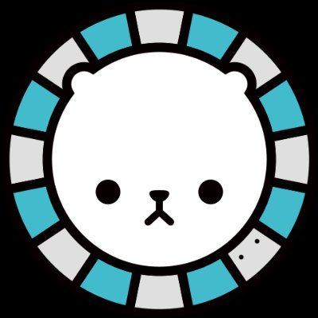
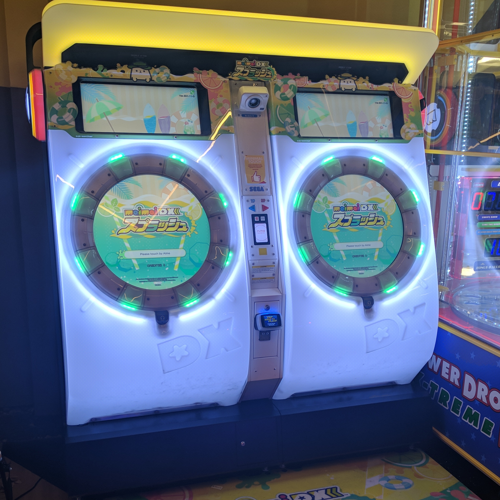
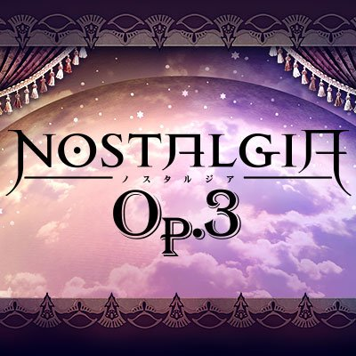
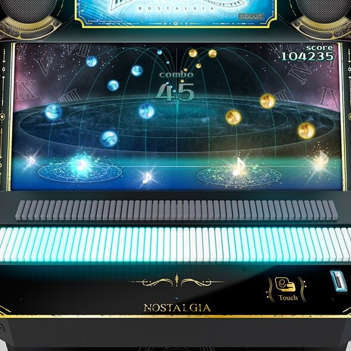
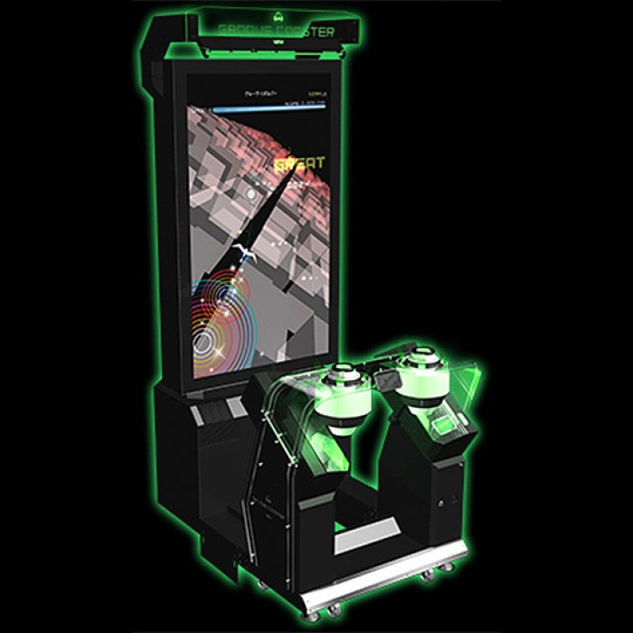

Showcasing the different games featured on this website
MaiMai

MaiMai is a series of rhythm arcade games made by Sega. The original arcade cabinet originated in Japan in 2012, and has slowly grown in popularity, expanding overseas to countries such as Hong Kong, Indonesia, Singapore, Australia and United States.
The first edition of MaiMai to appear in Singapore is MaiMai MURASAKi PLUS, releasing in June 22 2017.
Since then, there have been 6 new editions of the game released to arcades in Singapore.
Nostalgia

Nostalgia is a series of piano-like simulation games by Konami. The distinct piano tiles that lie on the front end of the arcade machines make it one of the most distinctive arcade cabinets. It's unique gameplay includes following notes fallling down on a screen infront of the piano keys and gliding along with the notes.
The game includes many unique popular Japanese tracks which are not seen in other games.
Nostalgia was first released in Japan on March 1 2017, joining the BEMANI series of games which include other household titles such as Dance Dance Revolution and Beatmania.
Groove Coaster

Groove Coaster is a video game series made by Japanese video game developer Taito. Unlike the other games included in the website, Groove Coaster is widely available on other platforms than just it's arcade machine.
The game first gained popularity in Japan through its mobile game under the same name, before moving on with arcade machines. Since then, it has gained significant popularity and revenue from its mobile alternatives, and as such the company made the decision to continue expanding the game to various other platforms such as for the Nintendo Switch and PC.
Groove Coaster was first released for IOS on July 28 2011, with it's arcade alternative releasing on November 5 2013.